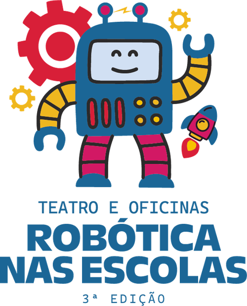
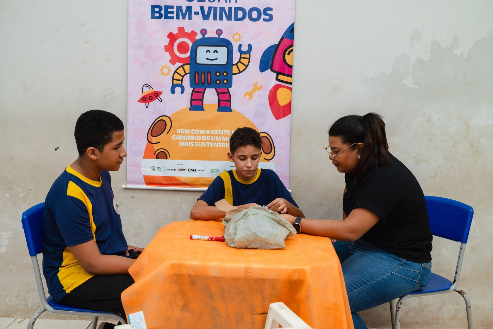
Confira a nossa peça teatral!
Bem-vindo ao Teatro e Oficina Robótica nas Escolas "Educando para o futuro com arte, inovação e criatividade." O projeto "Teatro e Oficinas de Robótica nas Escolas - 2ª Edição" trouxe uma abordagem inovadora ao promoveu o aprendizado lúdico e criativo entre crianças e adolescentes de escolas públicas. A iniciativa ofereceu apresentações teatrais que introduzem temas educacionais de forma dinâmica, além de oficinas de artes plásticas que incentivaram a expressão artística e a inovação.
Os alunos participaram de oficinas de artes plásticas para crianças e adolescentes com o tema da criatividade: "Criatividade em Contraponto aos Robôs - Construindo um Mundo Único".
Bem-vindo ao Teatro e Oficina Robótica nas Escolas "Educando para o futuro com arte, inovação e criatividade." O projeto "Teatro e Oficinas de Robótica nas Escolas - 2ª Edição" trouxe uma abordagem inovadora ao promoveu o aprendizado lúdico e criativo entre crianças e adolescentes de escolas públicas. A iniciativa ofereceu apresentações teatrais que introduzem temas educacionais de forma dinâmica, além de oficinas de artes plásticas que incentivaram a expressão artística e a inovação.
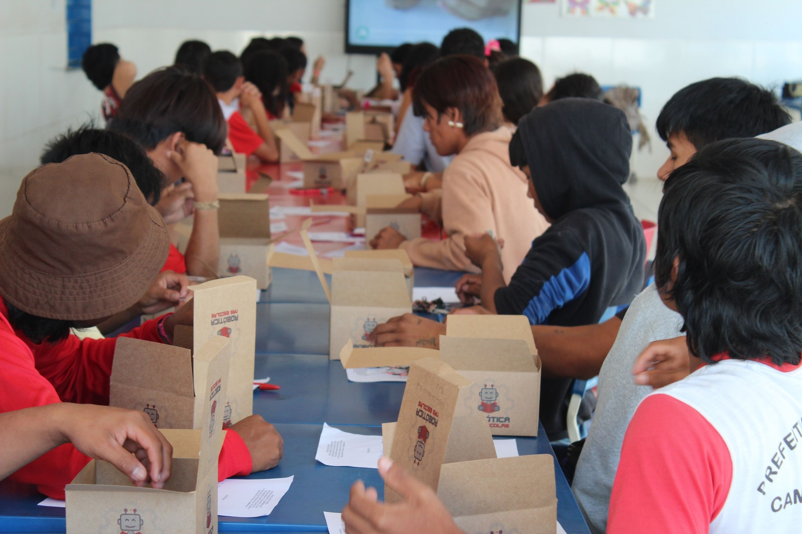
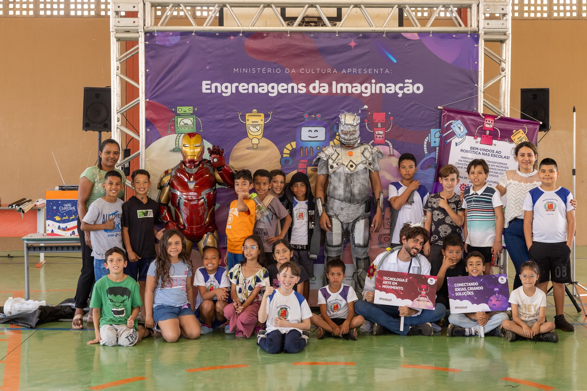
Os alunos participaram de oficinas de artes plásticas para crianças e adolescentes com o tema da criatividade: "Criatividade em Contraponto aos Robôs - Construindo um Mundo Único".
Em um formato envolvente e lúdico, a peça teatral explorou conceitos de robótica, inteligência artificial e automação, incentivando os estudantes a pensarem no futuro da tecnologia e no impacto dessas inovações em suas vidas. Combinando educação e cultura, o projeto foi uma experiência formativa que conectou o universo tecnológico ao cotidiano dos estudantes, inspirando-os a imaginar, criar e construir.
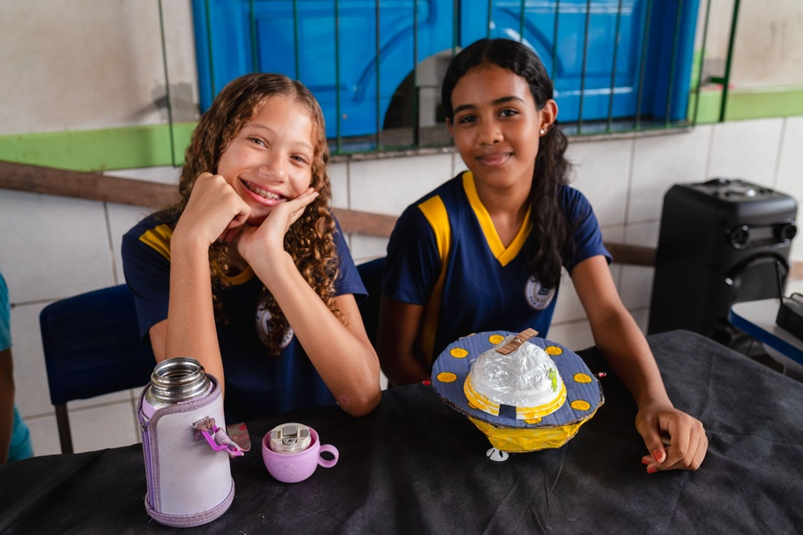
Como forma de democratizar o acesso à cultura no Brasil, o projeto conta com a disponibilização online do espetáculo realizado no Teatro Robótica nas Escolas e a oficina de artes plásticas - onde o público poderá conhecer melhor nossas experiências!
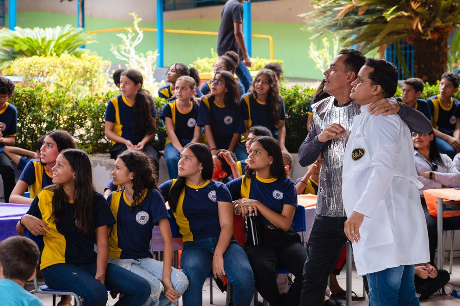
6 fotos do projeto
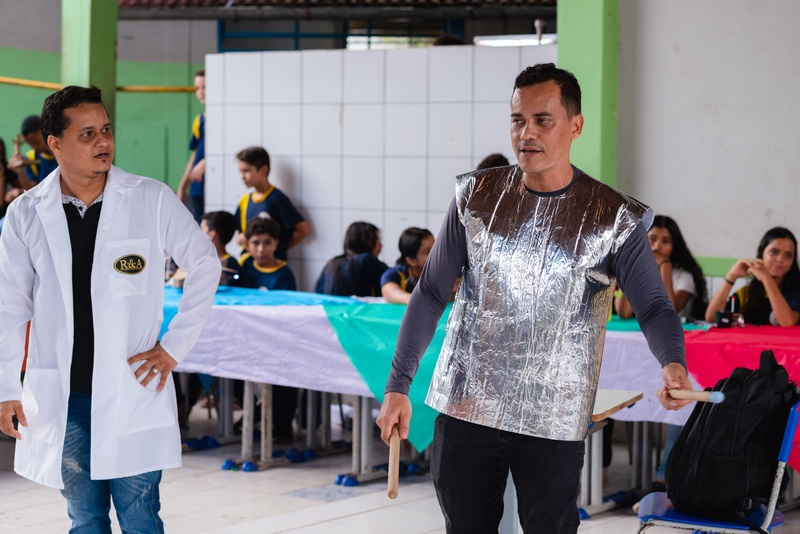
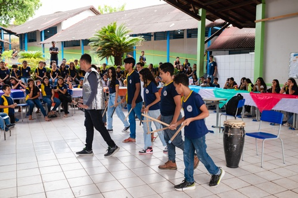
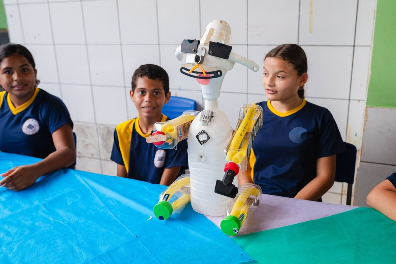
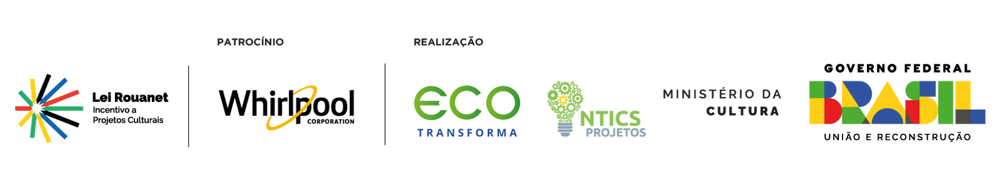
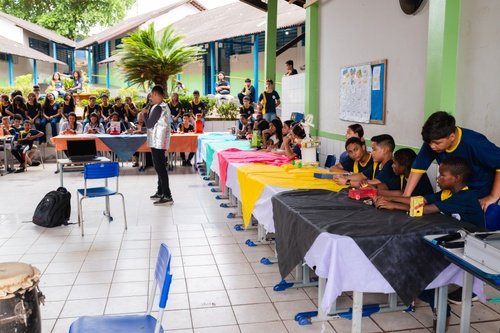
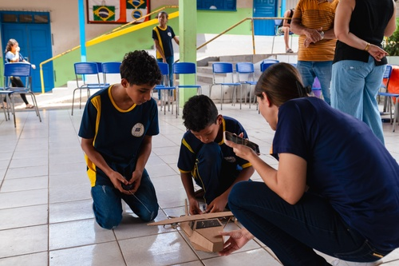